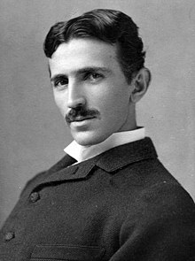

Nikola Tesla

Electrical & Mechanical Engineer(1856-1955)
10 Things You Didnt Know About Nikola Tesla:
- Nikola Tesla was born on July 10, 1856 in Smiljan, Lika of the Austro-Hungarian Empire, the present-day region of Croatia. His father, Milutin Tesla was a Serbian Orthodox priest and his mother, Djunka Mandic, an amateur inventor who sought to facilitate his activities at home, perhaps the first inspiration for the young Nikola.
- Tesla studied at the Austrian Polytechnic Institute and the University of Prague, first he became interested in physics and mathematics, but electrical engineering caught him, so much so that according to the Tesla Society of New York he narrates that one day he designed the first diagram of an induction motor when trying to explain to a friend what he imagined.
- Despite his genius, he was not a man recognized in his time, especially for the commercialization and patenting of Tesla's ideas by others, starting with Edison and Marconi. In 1884 he migrated to the United States in search of the American dream. He worked in the laboratories of Thomas Edison's company improving the products that were sold.
- What began as an employment relationship ended as a legal battle. Tesla improved the products so much that he devised a new electrical system that replaced the old and inefficient Edison system with high voltage or alternating current networks. Edison refused to replace him because he did not want economic losses, Tesla instead fought for the improvement in technology, which is finally what today brings us 'light' home.
- His ingenuity knew no bounds. Tesla introduced an electrical system to the motors, which he achieved after he discovered the rotating magnetic field that not only revolutionized the automotive industry, but also the electrical industry by creating the alternator, the transformers and the entire polyphase system that provides us with electrical energy.
- Also in 1896 he invented the first radio transistor, yes Tesla not Marconi. In 1943 the United States Supreme Court recognized Tesla's contribution over Marconi's, even though he had already won the Nobel Prize in 1909.
- He also installed the first hydroelectric plant at the Noagara Falls in 1895 and discovered fluorescent light, laser beams, wireless communications, thanks to him you have the Internet, wireless electrical transmission systems, remote control and robotics. In addition to the turbines. For this and more he registered nearly 700 patents. His research included the exploration of solar and marine energy, as well as communication via satellite.
- His most important discovery was made while living in Colorado Springs from May 1899 to 1900: the Earth's standing waves, which proved that our planet could be used as an electrical conductor at certain frequencies, so we could receive signals from outer space.
- Before his fight with J. Pierpont Morgan, he built a laboratory on Long Island, in which he built a tower in which the first telecommunications system would be transmitted. However, it was demolished in 1917 for “security reasons”, even after his death the FBI kept his documents, diagrams and inventions safe.
- Tesla died on January 7, 1943 at the New Yorker Hotel, where he lived for the last 10 years of his life, in room 3,327 on the 33rd floor. More than 2,000 people attended his funeral, and his ashes are kept in an urn. gold in the Tesla Museum in Belgrade.
"Our virtues and our defects are inseparable, like force and matter. When they separate, the man no longer exists"
-- Nicola Tesla
If you have time, you should read more about this incredible human being on his Wikipedia entry.